DataFrame产生背景
DataFrame它不是Spark SQL提出的，而是早起在R、Pandas语言就已经有了的。
- Spark RDD API vs MapReduce API Threshold
使用spark和mr开发需要学习对应语言scala和java等；门槛较高
- R/Pandas one machine
这些语言仅仅支持单机处理
sparksql里的DataFrame诞生易于R和Pandas的人无缝对接；降低了很多人的门槛
DataFrame概述
- A distributed collection of rows organized into named columns（将行组织命名为列的分布式集合）(RDD with schema)
- 它在概念上等价于关系数据库中的表或R/Python中的data frame，但是具有更丰富的优化
- 用于选择、筛选、聚合和绘制结构化数据的抽象
- 受到R和panda单机小数据处理应用于分布式大数据的启发
- 以前叫做SchemaRDD (Spark < 1.3)
A Dataset is a distributed collection of data：分布式的数据集
A DataFrame is a Dataset organized into named columns.
以列（列名、列的类型、列值）的形式构成的分布式数据集，按照列赋予不同的名称；比如：
student
id:int
name:string
city:string
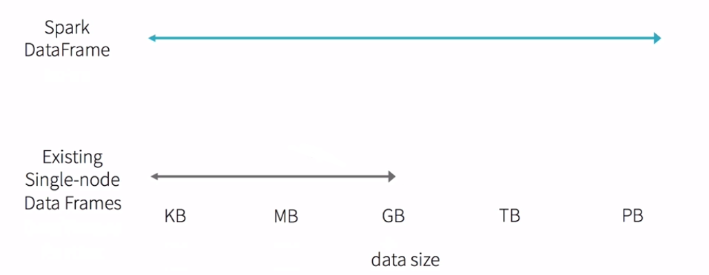
DataFrame和RDD的对比
RDD是Spark的内核
RDD弹性的分布式数据集五大特性
- 他有一系列的Partition组成的
- 每一个算子作用在每一个partition上
- rdd之间是有依赖关系的
宽依赖：父RDD的分区被子RDD的多个分区使用 例如 groupByKey、reduceByKey、sortByKey等操作会产生宽依赖，会产生shuffle
窄依赖：父RDD的每个分区都只被子RDD的一个分区使用 例如map、filter、union等操作会产生窄依赖
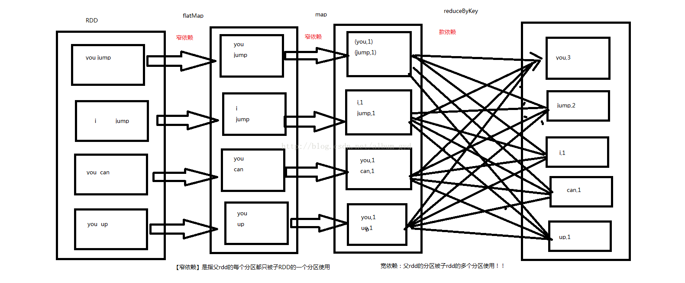
- 可选项:分区器作用在KV格式的RDD上 (1)分区器是在shuffle阶段起作用(2) GroupByKey, reduceBykey, join, sortByKey等这些算子会产生shuffle(3)这些算子必须作用在KV格式的RDD
- RDD会提供一系列最佳计算位置,说白了就是暴露每一个partitior的位置这是数据本地化的基础
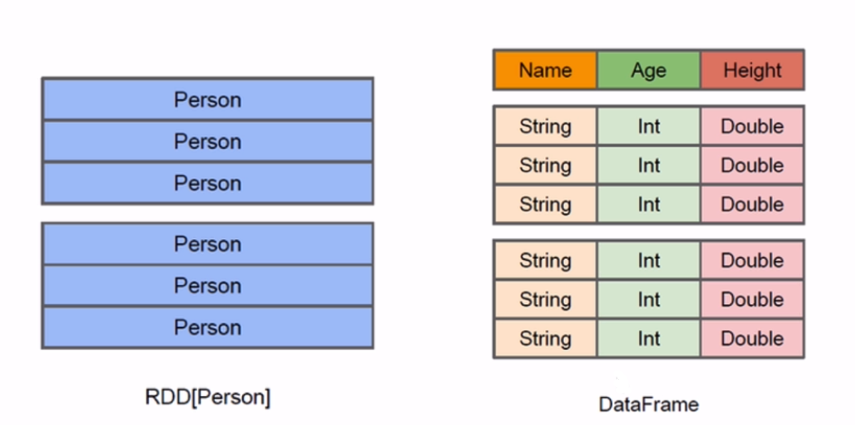
RDD：
java/scala ==> jvm
python ==> python runtime
DataFrame:
java/scala/python ==> Logic Plan
DataFrame基本API操作
Create DataFame
printSchema
show
select
filter
1
2
3
4
5
6
7
8
9
10
11
12
13
14
15
16
17
18
19
20
21
22
23
24
25
26
27
28
29
30
31
32
33
34
35
| package com.kun.dataframe
import org.apache.spark.sql.SparkSession
object DataFrameApp {
def main(args: Array[String]) {
val spark = SparkSession.builder().appName("DataFrameApp").master("local[2]").getOrCreate()
val peopleDF = spark.read.format("json").load("file:///Users/rocky/data/people.json")
peopleDF.printSchema()
peopleDF.show()
peopleDF.select("name").show()
peopleDF.select(peopleDF.col("name"), (peopleDF.col("age") + 10).as("age2")).show()
peopleDF.filter(peopleDF.col("age") > 19).show()
peopleDF.groupBy("age").count().show()
spark.stop()
}
}
|
DataFrame与RDD互操作方式
Spark SQL支持两种不同的方法将现有的rdd转换为数据集。第一种方法使用反射来推断包含特定类型对象的RDD的模式。这种基于反射的方法可以生成更简洁的代码，并且当您在编写Spark应用程序时已经了解模式时，这种方法可以很好地工作。
创建数据集的第二种方法是通过编程接口，该接口允许您构建模式，然后将其应用于现有的RDD。虽然这个方法比较冗长，但它允许在直到运行时才知道列及其类型时构造数据集。
测试文件infos.txt
1,zhangsan,20
2,lisi,30
3,wangwu,40
1
2
3
4
5
6
7
8
9
10
11
12
13
14
15
16
17
18
19
20
21
22
23
24
25
26
27
28
29
30
31
32
33
34
35
36
37
38
39
40
41
42
43
44
45
46
47
48
49
50
51
52
53
54
55
56
57
58
59
60
61
62
63
| package com.kun.dataframe
import org.apache.spark.sql.types.{StringType, IntegerType, StructField, StructType}
import org.apache.spark.sql.{Row, SparkSession}
object DataFrameRDDApp {
def main(args: Array[String]) {
val spark = SparkSession.builder().appName("DataFrameRDDApp").master("local[2]").getOrCreate()
program(spark)
spark.stop()
}
def program(spark: SparkSession): Unit = {
val rdd = spark.sparkContext.textFile("file:///Users/rocky/data/infos.txt")
val infoRDD = rdd.map(_.split(",")).map(line => Row(line(0).toInt, line(1), line(2).toInt))
val structType = StructType(Array(StructField("id", IntegerType, true),
StructField("name", StringType, true),
StructField("age", IntegerType, true)))
val infoDF = spark.createDataFrame(infoRDD,structType)
infoDF.printSchema()
infoDF.show()
infoDF.filter(infoDF.col("age") > 30).show
infoDF.createOrReplaceTempView("infos")
spark.sql("select * from infos where age > 30").show()
}
def inferReflection(spark: SparkSession) {
val rdd = spark.sparkContext.textFile("file:///Users/rocky/data/infos.txt")
import spark.implicits._
val infoDF = rdd.map(_.split(",")).map(line => Info(line(0).toInt, line(1), line(2).toInt)).toDF()
infoDF.show()
infoDF.filter(infoDF.col("age") > 30).show
infoDF.createOrReplaceTempView("infos")
spark.sql("select * from infos where age > 30").show()
}
case class Info(id: Int, name: String, age: Int)
}
|
DataFrame和RDD互操作的两种方式：
1）反射：case class 前提：事先需要知道你的字段、字段类型
2）编程：Row 如果第一种情况不能满足你的要求（事先不知道列）
3) 选型：优先考虑第一种
DataFrame API操作案例实战
student.data文件：
1
2
3
4
5
6
7
8
9
10
11
12
13
14
15
16
17
18
19
20
21
22
23
| 1|Burke|1-300-746-8446|ullamcorper.velit.in@ametnullaDonec.co.uk
2|Kamal|1-668-571-5046|pede.Suspendisse@interdumenim.edu
3|Olga|1-956-311-1686|Aenean.eget.metus@dictumcursusNunc.edu
4|Belle|1-246-894-6340|vitae.aliquet.nec@neque.co.uk
5|Trevor|1-300-527-4967|dapibus.id@acturpisegestas.net
6|Laurel|1-691-379-9921|adipiscing@consectetueripsum.edu
7|Sara|1-608-140-1995|Donec.nibh@enimEtiamimperdiet.edu
8|Kaseem|1-881-586-2689|cursus.et.magna@euismod.org
9|Lev|1-916-367-5608|Vivamus.nisi@ipsumdolor.com
10|Maya|1-271-683-2698|accumsan.convallis@ornarelectusjusto.edu
11|Emi|1-467-270-1337|est@nunc.com
12|Caleb|1-683-212-0896|Suspendisse@Quisque.edu
13|Florence|1-603-575-2444|sit.amet.dapibus@lacusAliquamrutrum.ca
14|Anika|1-856-828-7883|euismod@ligulaelit.co.uk
15|Tarik|1-398-171-2268|turpis@felisorci.com
16|Amena|1-878-250-3129|lorem.luctus.ut@scelerisque.com
17|Blossom|1-154-406-9596|Nunc.commodo.auctor@eratSed.co.uk
18|Guy|1-869-521-3230|senectus.et.netus@lectusrutrum.com
19|Malachi|1-608-637-2772|Proin.mi.Aliquam@estarcu.net
20|Edward|1-711-710-6552|lectus@aliquetlibero.co.uk
21||1-711-710-6552|lectus@aliquetlibero.co.uk
22||1-711-710-6552|lectus@aliquetlibero.co.uk
23|NULL|1-711-710-6552|lectus@aliquetlibero.co.uk
|
1
2
3
4
5
6
7
8
9
10
11
12
13
14
15
16
17
18
19
20
21
22
23
24
25
26
27
28
29
30
31
32
33
34
35
36
37
38
39
40
41
42
43
44
45
46
47
48
49
50
51
52
53
54
55
56
57
58
| package com.kun.dataframe
import org.apache.spark.sql.SparkSession
object DataFrameCase {
def main(args: Array[String]) {
val spark = SparkSession.builder().appName("DataFrameRDDApp").master("local[2]").getOrCreate()
val rdd = spark.sparkContext.textFile("file:///Users/rocky/data/student.data")
import spark.implicits._
val studentDF = rdd.map(_.split("\\|")).map(line => Student(line(0).toInt, line(1), line(2), line(3))).toDF()
studentDF.show
studentDF.show(30)
studentDF.show(30, false)
studentDF.take(10)
studentDF.first()
studentDF.head(3)
studentDF.select("email").show(30,false)
studentDF.filter("name=''").show
studentDF.filter("name='' OR name='NULL'").show
studentDF.filter("SUBSTR(name,0,1)='M'").show
studentDF.sort(studentDF("name")).show
studentDF.sort(studentDF("name").desc).show
studentDF.sort("name","id").show
studentDF.sort(studentDF("name").asc, studentDF("id").desc).show
studentDF.select(studentDF("name").as("student_name")).show
val studentDF2 = rdd.map(_.split("\\|")).map(line => Student(line(0).toInt, line(1), line(2), line(3))).toDF()
studentDF.join(studentDF2, studentDF.col("id") === studentDF2.col("id")).show
spark.stop()
}
case class Student(id: Int, name: String, phone: String, email: String)
}
|
同样可以在spark-shell里测试；速度比idea里要快
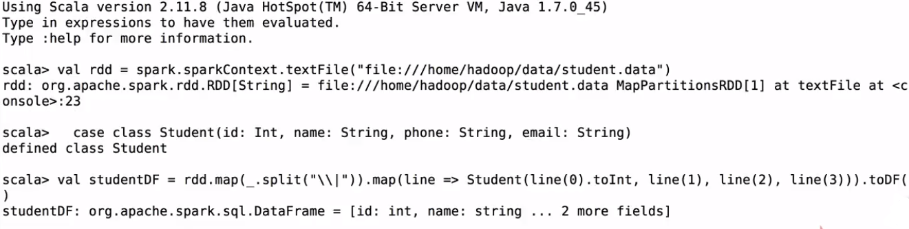
show()
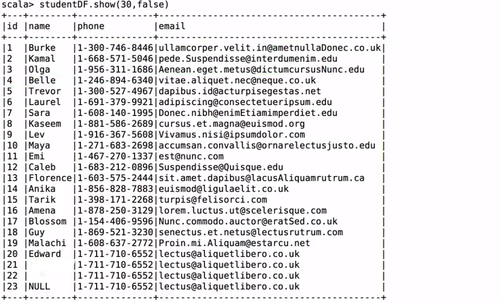
take取几个
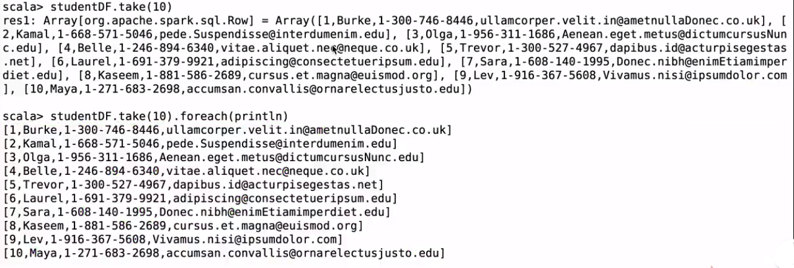
first取第一个；head取前几个
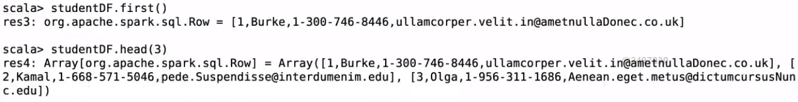
查看email 30个
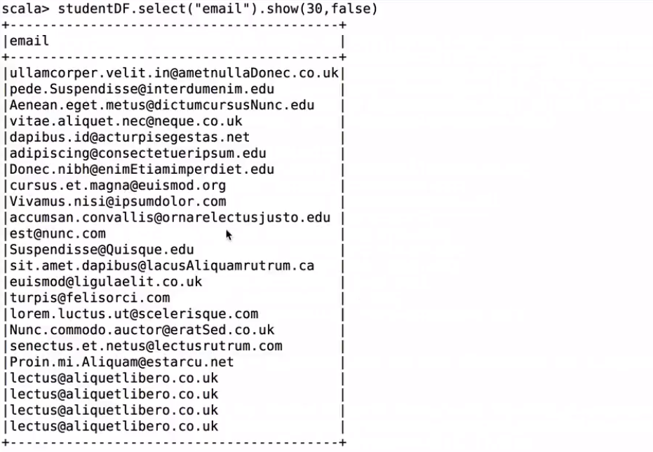
filter过滤name=“”的
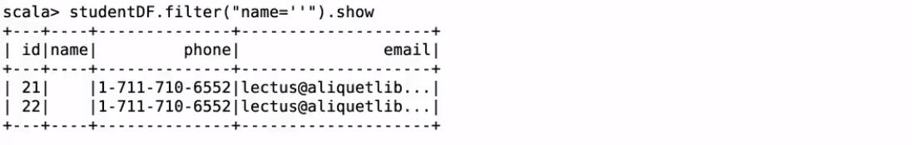
filter过滤name=“”和name=null的
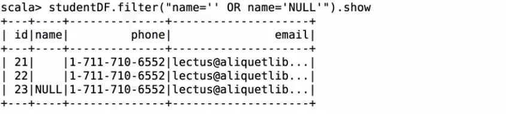
filter过滤名字开头为M的
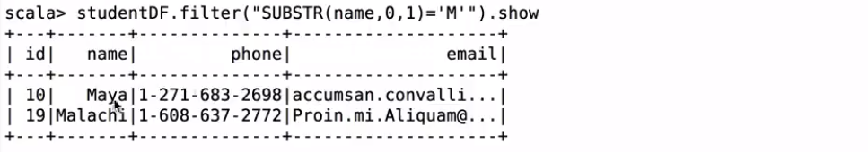
查看函数：
filter过滤名字开头为M的
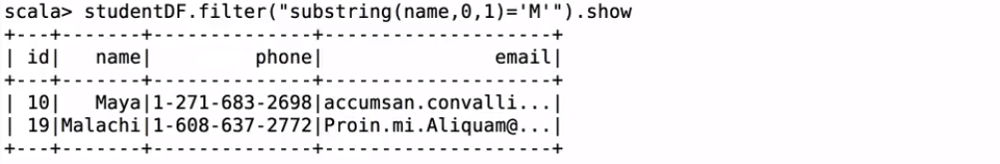
排序
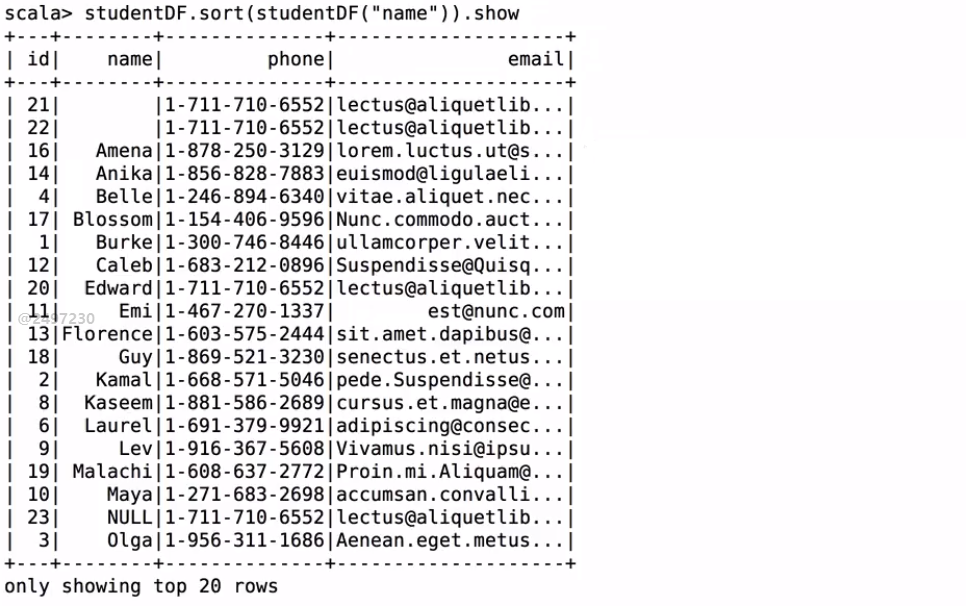
降序排
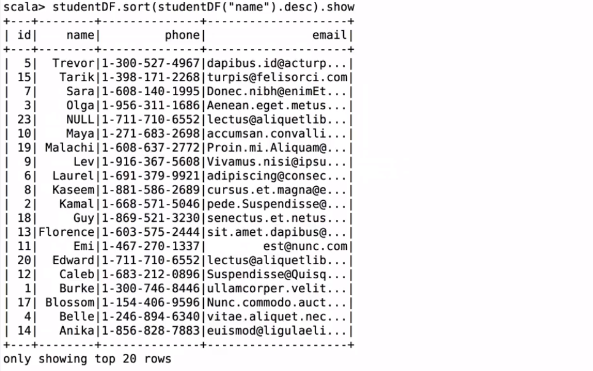
按照name和id排序
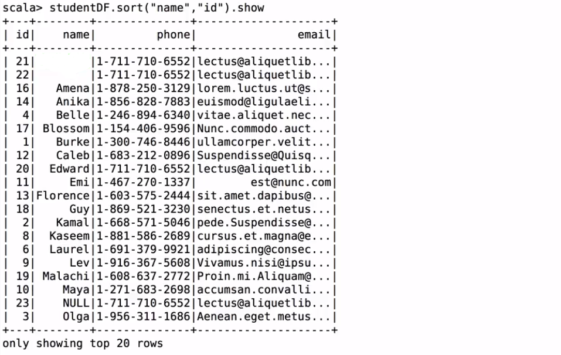
按照name升序和id降序排序
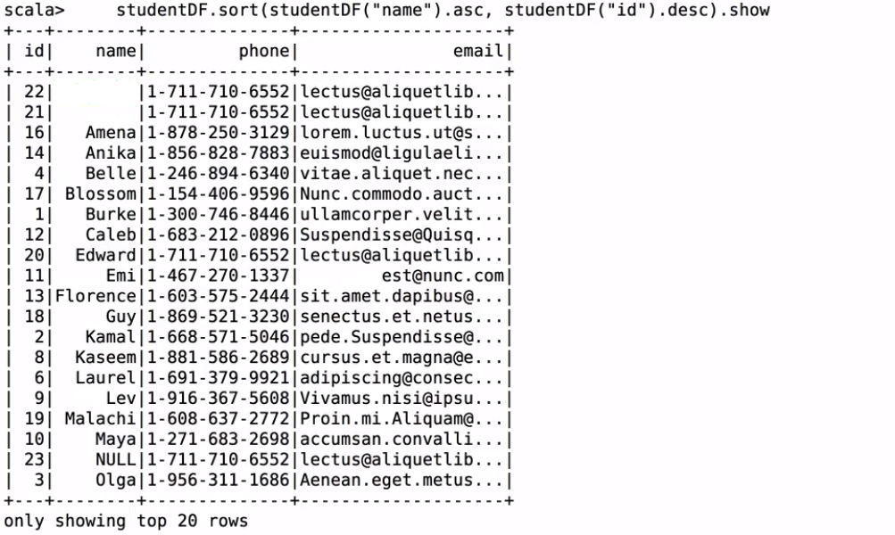
更改name为student_name
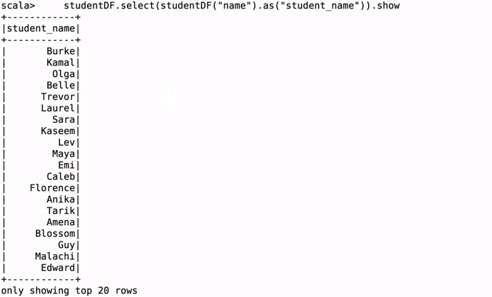
进行jion操作注意是三个=号
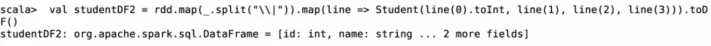
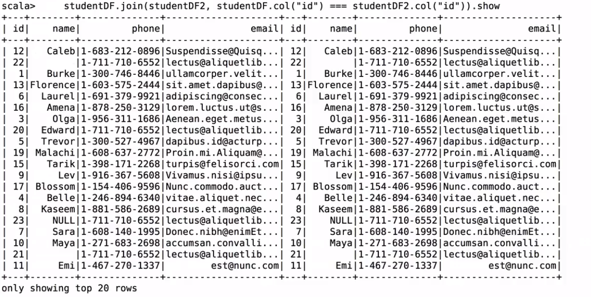
DataSet概述及使用
DataSet是数据的分布式集合。Dataset是Spark 1.6中添加的一个新接口，它提供了RDDs(强类型、使用强大lambda函数的能力)和Spark SQL优化执行引擎的优点。可以从JVM对象构造数据集，然后使用功能转换(映射、平面映射、筛选器等)操作数据集。数据集API在Scala和Java中可用。Python不支持数据集API。但是由于Python的动态特性，数据集API的许多优点已经可用(例如，您可以通过行名自然地访问行. columnname的字段)。R的情况类似。
静态类型(Static-typing)和运行时类型安全(runtime type-safety)

DataFrame = Dataset[Row]
Dataset：强类型 typed case class
DataFrame：弱类型 Row
SQL:
seletc name from person; compile ok, result no
错误sql语句编译的时候是发现不问题的；ok的；但是执行的时候可以发现是有问题的。
DF:
df.seletc(“name”) compile no
错误的dateframe方法，编译的时候就有问题的。
df.select(“nname”) compile ok
错误的dateframe列名；编译的时候是发现不了的，执行的时候是有问题的。
DS:
ds.map(line => line.itemid) compile no
错误的dateset列名和方法名；编译的时候是可以发现的。
1
2
3
4
5
6
7
8
9
10
11
12
13
14
15
16
17
18
19
20
21
22
23
24
25
26
27
28
29
30
31
32
33
34
35
36
37
38
39
| package com.kun.dataframe
import org.apache.spark.sql.SparkSession
object DatasetApp {
def main(args: Array[String]) {
val spark = SparkSession.builder().appName("DatasetApp")
.master("local[2]").getOrCreate()
import spark.implicits._
val path = "file:///Users/rocky/data/sales.csv"
val df = spark.read.option("header","true").option("inferSchema","true").csv(path)
df.show
val ds = df.as[Sales]
ds.map(line => line.itemId).show
spark.sql("seletc name from person").show
df.select("nname")
ds.map(line => line.itemId)
spark.stop()
}
case class Sales(transactionId:Int,customerId:Int,itemId:Int,amountPaid:Double)
}
|